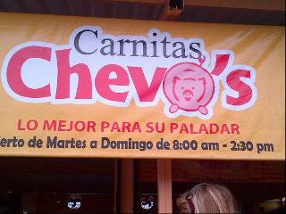

Carnitas Chevos
Nosotros los culichis tenemos un vicio por las cosas grasosas y si hay alguien que nos surte eso es Carnitas Chevo’s pal rumbo de Bacurimí.
Estos compas tienen enviciado a mas de uno con sus carnitas, chicharrones, buche etc. Puedes pedirlo por tacos o por orden. Echense una vuelta, la neta si estan ricos, nomas que preparense porque generalmente está hasta el tronco.